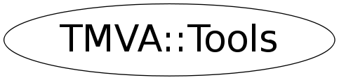

Function Members (Methods)
public:
| ~Tools() | |
| void | AddAttr(void* node, const char* attrname, const char* value) |
| void* | AddChild(void* parent, const char* childname, const char* content = 0, bool isRootNode = false) |
| Bool_t | AddComment(void* node, const char* comment) |
| Bool_t | AddRawLine(void* node, const char* raw) |
| vector<TMatrixDSym*>* | CalcCovarianceMatrices(const vector<TMVA::Event*,allocator<TMVA::Event*> >& events, Int_t maxCls, TMVA::VariableTransformBase* transformBase = 0) |
| Bool_t | CheckForSilentOption(const TString&) const |
| Bool_t | CheckForVerboseOption(const TString&) const |
| Bool_t | CheckSplines(const TH1*, const TSpline*) |
| const TString& | Color(const TString&) |
| void | ComputeStat(const vector<TMVA::Event*>&, vector<Float_t>*, Double_t&, Double_t&, Double_t&, Double_t&, Double_t&, Double_t&, Int_t signalClass, Bool_t norm = kFALSE) |
| Double_t | ComputeVariance(Double_t sumx2, Double_t sumx, Int_t nx) |
| Bool_t | ContainsRegularExpression(const TString& s) |
| static void | DestroyInstance() |
| void | FormattedOutput(const TMatrixD&, const vector<TString>&, TMVA::MsgLogger& logger) |
| void | FormattedOutput(const TMatrixD&, const vector<TString>& vert, const vector<TString>& horiz, TMVA::MsgLogger& logger) |
| void | FormattedOutput(const vector<Double_t>&, const vector<TString>&, const TString titleVars, const TString titleValues, TMVA::MsgLogger& logger, TString format = "%+1.3f") |
| void* | GetChild(void* parent, const char* childname = 0) |
| const char* | GetContent(void* node) |
| const TMatrixD* | GetCorrelationMatrix(const TMatrixD* covMat) |
| Double_t | GetCorrelationRatio(const TH2F&) |
| Int_t | GetIndexMaxElement(vector<Double_t>&) |
| Int_t | GetIndexMinElement(vector<Double_t>&) |
| Double_t | GetMutualInformation(const TH2F&) |
| const char* | GetName(void* node) |
| void* | GetNextChild(void* prevchild, const char* childname = 0) |
| void* | GetParent(void* child) |
| Double_t | GetSeparation(TH1* S, TH1* B) const |
| Double_t | GetSeparation(const TMVA::PDF& pdfS, const TMVA::PDF& pdfB) const |
| TMatrixD* | GetSQRootMatrix(TMatrixDSym* symMat) |
| TString | GetXTitleWithUnit(const TString& title, const TString& unit) |
| TString | GetYTitleWithUnit(const TH1& h, const TString& unit, Bool_t normalised) |
| Bool_t | HasAttr(void* node, const char* attrname) |
| Bool_t | HistoHasEquidistantBins(const TH1& h) |
| static TMVA::Tools& | Instance() |
| TMVA::MsgLogger& | Log() const |
| vector<Double_t> | MVADiff(vector<Double_t>&, vector<Double_t>&) |
| Double_t | NormHist(TH1* theHist, Double_t norm = 1.0) |
| Double_t | NormVariable(Double_t x, Double_t xmin, Double_t xmax) |
| vector<Int_t>* | ParseANNOptionString(TString theOptions, Int_t nvar, vector<Int_t>* nodes) |
| TList* | ParseFormatLine(TString theString, const char* sep = ":") |
| TH1* | projNormTH1F(TTree* theTree, const TString& theVarName, const TString& name, Int_t nbins, Double_t xmin, Double_t xmax, const TString& cut) |
| void | ReadAttr(void* node, const char* attrname, TString& value) |
| void | ReadFloatArbitraryPrecision(Float_t& val, istream& is) |
| void | ReadTMatrixDFromXML(void* node, const char* name, TMatrixD* mat) |
| void | ReadTVectorDFromXML(void* node, const char* name, TVectorD* vec) |
| TString | ReplaceRegularExpressions(const TString& s, const TString& replace = "+") |
| void | ROOTVersionMessage(TMVA::MsgLogger& logger) |
| void | Scale(vector<Double_t>&, Double_t) |
| void | Scale(vector<Float_t>&, Float_t) |
| vector<TString> | SplitString(const TString& theOpt, const char separator) const |
| TString | StringFromDouble(Double_t d) |
| TString | StringFromInt(Long_t i) |
| void | TMVACitation(TMVA::MsgLogger& logger, TMVA::Tools::ECitation citType = kPlainText) |
| void | TMVAVersionMessage(TMVA::MsgLogger& logger) |
| void | TMVAWelcomeMessage() |
| void | TMVAWelcomeMessage(TMVA::MsgLogger& logger, TMVA::Tools::EWelcomeMessage m = kStandardWelcomeMsg) |
| TMVA::Tools | Tools(const TMVA::Tools&) |
| TH2F* | TransposeHist(const TH2F&) |
| void | UsefulSortAscending(vector<Double_t>&) |
| void | UsefulSortAscending(vector<std::vector<Double_t> >&, vector<TString>* vs = 0) |
| void | UsefulSortDescending(vector<Double_t>&) |
| void | UsefulSortDescending(vector<std::vector<Double_t> >&, vector<TString>* vs = 0) |
| void | WriteFloatArbitraryPrecision(Float_t val, ostream& os) |
| void | WriteTMatrixDToXML(void* node, const char* name, TMatrixD* mat) |
| void | WriteTVectorDToXML(void* node, const char* name, TVectorD* vec) |
| TXMLEngine& | xmlengine() |
Data Members
Class Charts
{kind=link}
{kind=link}
{kind=link}
{kind=link}

Function documentation
void DestroyInstance()
Double_t GetSeparation(TH1* S, TH1* B) const
compute "separation" defined as
<s2> = (1/2) Int_-oo..+oo { (S^2(x) - B^2(x))/(S(x) + B(x)) dx }
Double_t GetSeparation(const TMVA::PDF& pdfS, const TMVA::PDF& pdfB) const
compute "separation" defined as
<s2> = (1/2) Int_-oo..+oo { (S(x)2 - B(x)2)/(S(x) + B(x)) dx }
void ComputeStat(const vector<TMVA::Event*>& , vector<Float_t>* , Double_t& , Double_t& , Double_t& , Double_t& , Double_t& , Double_t& , Int_t signalClass, Bool_t norm = kFALSE)
sanity check
TMatrixD* GetSQRootMatrix(TMatrixDSym* symMat)
square-root of symmetric matrix of course the resulting sqrtMat is also symmetric, but it's easier to treat it as a general matrix
const TMatrixD* GetCorrelationMatrix(const TMatrixD* covMat)
turns covariance into correlation matrix
TH1* projNormTH1F(TTree* theTree, const TString& theVarName, const TString& name, Int_t nbins, Double_t xmin, Double_t xmax, const TString& cut)
projects variable from tree into normalised histogram
TList* ParseFormatLine(TString theString, const char* sep = ":")
Parse the string and cut into labels separated by ":"
vector<Int_t>* ParseANNOptionString(TString theOptions, Int_t nvar, vector<Int_t>* nodes)
parse option string for ANN methods default settings (should be defined in theOption string)
Bool_t CheckSplines(const TH1* , const TSpline* )
check quality of splining by comparing splines and histograms in each bin
std::vector<Double_t> MVADiff(vector<Double_t>& , vector<Double_t>& )
computes difference between two vectors
void UsefulSortAscending(vector<std::vector<Double_t> >& , vector<TString>* vs = 0)
sort 2D vector (AND in parallel a TString vector) in such a way that the "first vector is sorted" and the other vectors are reshuffled in the same way as necessary to have the first vector sorted. I.e. the correlation between the elements is kept.
void UsefulSortDescending(vector<std::vector<Double_t> >& , vector<TString>* vs = 0)
sort 2D vector (AND in parallel a TString vector) in such a way that the "first vector is sorted" and the other vectors are reshuffled in the same way as necessary to have the first vector sorted. I.e. the correlation between the elements is kept.
Double_t GetMutualInformation(const TH2F& )
Mutual Information method for non-linear correlations estimates in 2D histogram Author: Moritz Backes, Geneva (2009)
Double_t GetCorrelationRatio(const TH2F& )
Compute Correlation Ratio of 2D histogram to estimate functional dependency between two variables Author: Moritz Backes, Geneva (2009)
Double_t GetYMean_binX(const TH2& , Int_t bin_x)
Compute the mean in Y for a given bin X of a 2D histogram
Bool_t CheckForSilentOption(const TString& ) const
check for "silence" option in configuration option string
Bool_t ContainsRegularExpression(const TString& s)
check if regular expression
helper function to search for "$!%^&()'<>?= " in a string
TString ReplaceRegularExpressions(const TString& s, const TString& replace = "+")
replace regular expressions
helper function to remove all occurences "$!%^&()'<>?= " from a string
and replace all ::,$,*,/,+,- with _M_,_S_,_T_,_D_,_P_,_M_ respectively
void FormattedOutput(const vector<Double_t>& , const vector<TString>& , const TString titleVars, const TString titleValues, TMVA::MsgLogger& logger, TString format = "%+1.3f")
formatted output of simple table
void FormattedOutput(const TMatrixD& , const vector<TString>& , TMVA::MsgLogger& logger)
formatted output of matrix (with labels)
void FormattedOutput(const TMatrixD& , const vector<TString>& vert, const vector<TString>& horiz, TMVA::MsgLogger& logger)
formatted output of matrix (with labels)
TString GetYTitleWithUnit(const TH1& h, const TString& unit, Bool_t normalised)
histogramming utility
void WriteFloatArbitraryPrecision(Float_t val, ostream& os)
writes a float value with the available precision to a stream
void ReadFloatArbitraryPrecision(Float_t& val, istream& is)
reads a float value with the available precision from a stream
void* AddChild(void* parent, const char* childname, const char* content = 0, bool isRootNode = false)
add child node
Bool_t AddComment(void* node, const char* comment)
std::vector<TString> SplitString(const TString& theOpt, const char separator) const
splits the option string at 'separator' and fills the list 'splitV' with the primitive strings
void WriteTVectorDToXML(void* node, const char* name, TVectorD* vec)
void ReadTVectorDFromXML(void* node, const char* name, TVectorD* vec)
void ReadTMatrixDFromXML(void* node, const char* name, TMatrixD* mat)
void TMVAWelcomeMessage(TMVA::MsgLogger& logger, TMVA::Tools::EWelcomeMessage m = kStandardWelcomeMsg)
various kinds of welcome messages ASCII text generated by this site: http://www.network-science.de/ascii
void TMVACitation(TMVA::MsgLogger& logger, TMVA::Tools::ECitation citType = kPlainText)
kinds of TMVA citation
Bool_t HistoHasEquidistantBins(const TH1& h)
CalcCovarianceMatrices(const vector<TMVA::Event*,allocator<TMVA::Event*> >& events, Int_t maxCls, TMVA::VariableTransformBase* transformBase = 0)
compute covariance matrices
Tools()